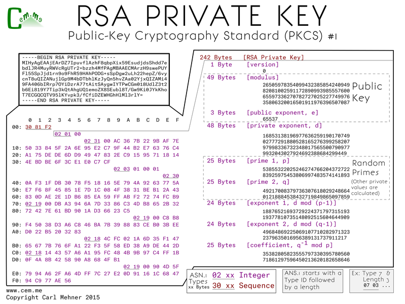

Certificate Binary Posters (Part One)
To better understand the ins and outs of TLS certificates and the way they are stored in files, I decided to do a short series on the different PKCS (Public Key Cryptography Standards) that dissects each individual byte of the certificate or key file. This is part one which covers the public and private keys stored in the PKCS #1 format.
The core and heart of a certificate are keys. Certificates utilize both public and private keys which are mathematically bound. The PKCS #1 standard includes both public and private key formats. The first step is to create the private key. Here is the way it's represented: on the top left - the binary file encoded in base64 (easiest for emailing or copy-pasting), below that - expanded into binary, and on the right - each byte expanded into what it means.
The p and q are two random primes, e is an exponent used as part of the math, the value of e is typically the same across all certs. All of the other values are calculated based off of p, q, e and specific mathematical functions. n is the result of multiplying p and q, d is equal to e-1 % (n - (p + q -1)), all the other formulas are noted on the chart. The calculated values are all used extensively during crypto operations and are stored in the file to make those crypto operations faster.
The public key, as stored in the PKCS#1 format starts off with a wrapper of two main sections, a descriptor of the algorithm and second, the bits in the public key. The descriptor holds the OID (Object IDentifier) of the encryption algorithm for which this key is to be used. The key includes same values that may look familiar: n and e, the multiplied primes used as the modulus and the exponent the message to encrypt is raised to the power of when encrypting.